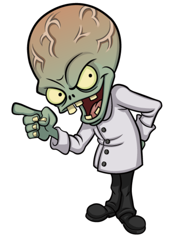

Garden Warfare 2 is the best game of the
Plants Vs Zombies franchise. It is an FPS
in wich you play as either the plants or the zombies.
Imagine Call Of Duty but where you actually enjoy
the game and have fun. There isn't only online,
it also has a very interesting solo adventure where
you try to find hidden gnomes all around your base.
Every charchter has different variants (they removed
them in BFN even if no one asked for it) wich is the
collest part of the game, like who doesn't want
to be a fire shooting pea or a midget zombie
controlling a massive robot with lazers.

